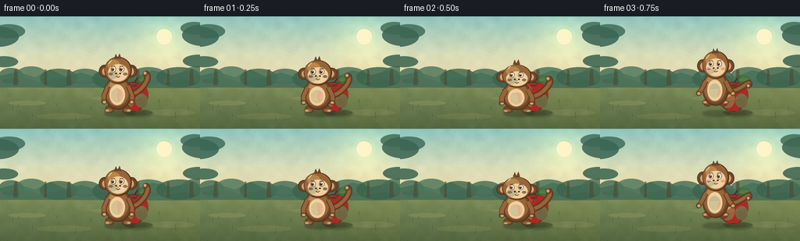
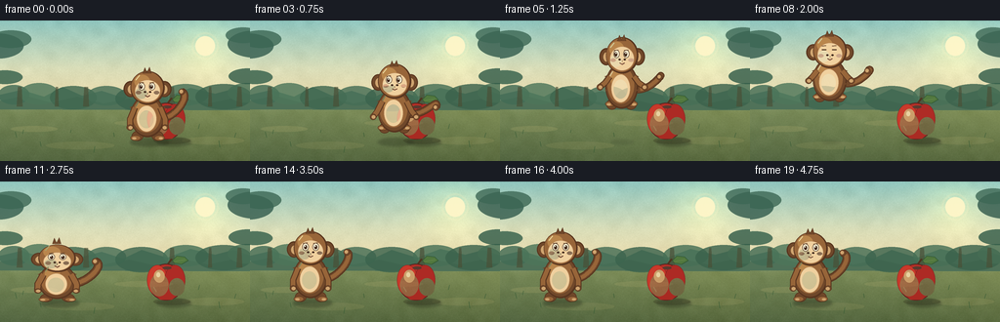

CODING AGENTS AS PIXEL WORLD MODELS
traex/DeepSeek-V4.1-Flash · dynamic_spatial_relationship_0061
点击播放 · 原生 RGB 像素
逐轮保存的候选
回放视频、检查图与代码变化。
每份候选均可单独播放。实际图片检查记录在下方工具轨迹中。
候选 01播放与检查图
点击播放 · 原生 RGB 像素


展开代码变化
--- 上一保存版本
+++ 本次保存版本
@@ -0,0 +1,516 @@
+"""Procedurally render a monkey jumping from in front of an apple to its left."""
+
+from __future__ import annotations
+
+import math
+from pathlib import Path
+
+import cv2
+import numpy as np
+from PIL import Image, ImageDraw, ImageFilter
+
+from artifact_io import save
+
+
+WIDTH = 256
+HEIGHT = 144
+FRAMES = 20
+FPS = 4.0
+SS = 4 # Supersampling makes the small final image feel intentionally illustrated.
+
+CASE_DIR = Path(__file__).resolve().parent
+
+
+def rgb(value: str) -> tuple[int, int, int]:
+ value = value.lstrip("#")
+ return tuple(int(value[i : i + 2], 16) for i in (0, 2, 4))
+
+
+def sc(value: float) -> int:
+ return int(round(value * SS))
+
+
+def box(cx: float, cy: float, rx: float, ry: float) -> tuple[int, int, int, int]:
+ return (sc(cx - rx), sc(cy - ry), sc(cx + rx), sc(cy + ry))
+
+
+def scaled_points(points: list[tuple[float, float]]) -> list[tuple[int, int]]:
+ return [(sc(x), sc(y)) for x, y in points]
+
+
+def ellipse(
+ draw: ImageDraw.ImageDraw,
+ cx: float,
+ cy: float,
+ rx: float,
+ ry: float,
+ fill,
+ outline=None,
+ width: float = 0,
+) -> None:
+ draw.ellipse(
+ box(cx, cy, rx, ry),
+ fill=fill,
+ outline=outline,
+ width=sc(width) if width else 0,
+ )
+
+
+def polygon(
+ draw: ImageDraw.ImageDraw,
+ points: list[tuple[float, float]],
+ fill,
+ outline=None,
+ width: float = 0,
+) -> None:
+ draw.polygon(
+ scaled_points(points),
+ fill=fill,
+ outline=outline,
+ width=sc(width) if width else 0,
+ )
+
+
+def line(
+ draw: ImageDraw.ImageDraw,
+ points: list[tuple[float, float]],
+ fill,
+ width: float,
+) -> None:
+ draw.line(
+ scaled_points(points),
+ fill=fill,
+ width=sc(width),
+ joint="curve",
+ )
+
+
+def bezier(points: list[tuple[float, float]], count: int = 42) -> list[tuple[float, float]]:
+ """Evaluate a cubic Bezier curve."""
+ p0, p1, p2, p3 = points
+ result = []
+ for i in range(count):
+ t = i / (count - 1)
+ u = 1.0 - t
+ x = u**3 * p0[0] + 3 * u * u * t * p1[0] + 3 * u * t * t * p2[0] + t**3 * p3[0]
+ y = u**3 * p0[1] + 3 * u * u * t * p1[1] + 3 * u * t * t * p2[1] + t**3 * p3[1]
+ result.append((x, y))
+ return result
+
+
+def rotate_points(
+ points: list[tuple[float, float]],
+ cx: float,
+ cy: float,
+ angle_deg: float,
+) -> list[tuple[float, float]]:
+ angle = math.radians(angle_deg)
+ c, s = math.cos(angle), math.sin(angle)
+ return [
+ (cx + (x - cx) * c - (y - cy) * s, cy + (x - cx) * s + (y - cy) * c)
+ for x, y in points
+ ]
+
+
+def make_background() -> Image.Image:
+ """Build a soft, warm jungle clearing with low-detail scenery."""
+ w, h = WIDTH * SS, HEIGHT * SS
+ yy = np.linspace(0.0, 1.0, h, dtype=np.float32)[:, None]
+ xx = np.linspace(0.0, 1.0, w, dtype=np.float32)[None, :]
+
+ sky_top = np.array(rgb("#8fc5be"), dtype=np.float32)
+ sky_mid = np.array(rgb("#d9ddb8"), dtype=np.float32)
+ sky_low = np.array(rgb("#f4d9a5"), dtype=np.float32)
+ blend = np.clip(yy / 0.68, 0.0, 1.0)
+ first_half = np.clip(blend * 2.0, 0.0, 1.0)
+ second_half = np.clip((blend - 0.5) * 2.0, 0.0, 1.0)
+ sky = sky_top[None, None, :] * (1 - first_half[..., None])
+ sky += sky_mid[None, None, :] * first_half[..., None]
+ sky = sky * (1 - second_half[..., None]) + sky_low[None, None, :] * second_half[..., None]
+
+ ground_top = np.array(rgb("#83935d"), dtype=np.float32)
+ ground_bottom = np.array(rgb("#52643e"), dtype=np.float32)
+ ground_t = np.clip((yy - 0.58) / 0.42, 0.0, 1.0)
+ ground = ground_top[None, None, :] * (1 - ground_t[..., None])
+ ground = ground + ground_bottom[None, None, :] * ground_t[..., None]
+ ground = ground + (xx[..., None] - 0.5) * np.array([8.0, 5.0, -2.0], dtype=np.float32)
+
+ horizon = int(0.585 * h)
+ arr = np.empty((h, w, 3), dtype=np.float32)
+ arr[:horizon] = sky[:horizon]
+ arr[horizon:] = ground[horizon:]
+
+ # Sun and a broad atmospheric glow.
+ sun_x, sun_y = 0.82 * w, 0.18 * h
+ dist = np.sqrt(((xx * w - sun_x) / (0.22 * w)) ** 2 + ((yy * h - sun_y) / (0.34 * h)) ** 2)
+ glow = np.exp(-(dist**2) * 2.2).astype(np.float32)
+ arr += glow[..., None] * np.array([32.0, 25.0, 7.0], dtype=np.float32)
+
+ # Fine grain plus broad, cloud-like color variation.
+ rng = np.random.default_rng(61)
+ fine = rng.normal(0.0, 1.0, (h // 4, w // 4)).astype(np.float32)
+ fine = cv2.resize(fine, (w, h), interpolation=cv2.INTER_CUBIC)
+ broad = rng.normal(0.0, 1.0, (h // 32, w // 32)).astype(np.float32)
+ broad = cv2.resize(broad, (w, h), interpolation=cv2.INTER_CUBIC)
+ arr += fine[..., None] * 1.7 + broad[..., None] * 2.2
+
+ image = Image.fromarray(np.clip(arr, 0, 255).astype(np.uint8))
+ draw = ImageDraw.Draw(image, "RGBA")
+
+ ellipse(draw, 210, 26, 10, 10, (255, 246, 200, 235))
+ ellipse(draw, 210, 26, 14, 14, None, (255, 244, 190, 42), 2)
+
+ # Distant hills and tree crowns are intentionally low contrast.
+ polygon(
+ draw,
+ [(0, 88), (0, 76), (22, 71), (45, 78), (64, 68), (84, 77), (104, 72),
+ (126, 79), (145, 70), (171, 78), (195, 69), (220, 75), (239, 70), (256, 76),
+ (256, 90)],
+ (105, 138, 111, 255),
+ )
+ polygon(
+ draw,
+ [(0, 91), (0, 82), (26, 77), (52, 84), (79, 78), (106, 85), (132, 80),
+ (159, 86), (186, 79), (213, 85), (236, 80), (256, 84), (256, 92)],
+ (79, 113, 88, 255),
+ )
+
+ # A broken tree line gives the clearing depth without competing with the actors.
+ for cx, cy, rx, ry, color in [
+ (14, 76, 16, 10, "#426b54"),
+ (40, 75, 20, 11, "#4c7559"),
+ (75, 79, 24, 12, "#3f674f"),
+ (109, 77, 20, 10, "#456d55"),
+ (145, 80, 27, 13, "#3b634d"),
+ (190, 76, 23, 11, "#466f55"),
+ (229, 78, 29, 13, "#3b624c"),
+ (253, 74, 20, 10, "#456d53"),
+ ]:
+ ellipse(draw, cx, cy, rx, ry, (*rgb(color), 210))
+ for x, width in [(20, 3), (58, 2), (88, 3), (176, 3), (215, 2), (245, 3)]:
+ polygon(draw, [(x - width, 88), (x + width, 88), (x + width * 0.65, 68), (x - width * 0.55, 68)],
+ (73, 78, 53, 170))
+
+ # Soft foreground foliage at the edges frames the scene.
+ for cx, cy, rx, ry, color in [
+ (-4, 26, 28, 13, "#315a4c"),
+ (11, 19, 21, 9, "#3b6653"),
+ (262, 24, 29, 14, "#31584a"),
+ (249, 15, 18, 8, "#3d6755"),
+ (5, 58, 18, 7, "#315d48"),
+ (254, 57, 20, 8, "#2f5946"),
+ ]:
+ ellipse(draw, cx, cy, rx, ry, (*rgb(color), 205))
+
+ # Ground light and texture.
+ polygon(draw, [(0, 93), (256, 93), (256, 144), (0, 144)], (112, 127, 71, 34))
+ for x, y, rx, ry, alpha in [
+ (35, 111, 24, 3, 35),
+ (82, 128, 35, 4, 24),
+ (147, 105, 30, 3, 28),
+ (218, 123, 32, 4, 27),
+ ]:
+ ellipse(draw, x, y, rx, ry, (224, 205, 133, alpha))
+
+ # Sparse grass blades add scale but leave the action area clean.
+ grass = (55, 91, 53, 170)
+ for x, y, h, lean in [
+ (17, 120, 6, -1.5), (23, 116, 4, 1.0), (42, 129, 5, -1.0),
+ (96, 135, 6, 1.0), (117, 119, 4, -0.7), (203, 111, 5, 1.2),
+ (225, 130, 7, -1.0), (240, 120, 5, 1.4), (72, 115, 3, 0.8),
+ ]:
+ line(draw, [(x, y), (x + lean, y - h)], grass, 0.8)
+
+ # Foreground vignette, kept subtle so the RGB image stays bright.
+ vignette = Image.new("L", (w, h), 0)
+ vd = ImageDraw.Draw(vignette)
+ vd.rectangle((0, 0, w, h), fill=0)
+ vd.ellipse((sc(-22), sc(-12), sc(278), sc(157)), fill=255)
+ vignette = vignette.filter(ImageFilter.GaussianBlur(sc(12)))
+ shade = Image.eval(vignette, lambda v: int((255 - v) * 0.12))
+ image = Image.composite(Image.new("RGB", (w, h), (28, 44, 31)), image, shade)
+ return image
+
+
+def draw_shadow(
+ image: Image.Image,
+ cx: float,
+ ground_y: float,
+ jump_height: float,
+ width_scale: float = 1.0,
+) -> None:
+ layer = Image.new("RGBA", image.size, (0, 0, 0, 0))
+ draw = ImageDraw.Draw(layer, "RGBA")
+ shrink = max(0.48, 1.0 - jump_height / 70.0)
+ alpha = int(88 * max(0.35, 1.0 - jump_height / 52.0))
+ ellipse(
+ draw,
+ cx + 2,
+ ground_y + 1.5,
+ 20 * shrink * width_scale,
+ 4.3 * shrink,
+ (35, 42, 25, alpha),
+ )
+ layer = layer.filter(ImageFilter.GaussianBlur(sc(1.2)))
+ image.alpha_composite(layer)
+
+
+def draw_apple(image: Image.Image) -> None:
+ layer = Image.new("RGBA", image.size, (0, 0, 0, 0))
+ draw = ImageDraw.Draw(layer, "RGBA")
+
+ # Ground contact shadow.
+ ellipse(draw, 176, 123, 19, 3.5, (47, 48, 26, 78))
+
+ # Stem and leaf sit behind the fruit.
+ stem = bezier([(171, 89), (171, 84), (174, 82), (176, 79)], 20)
+ line(draw, stem, (77, 53, 32, 255), 2.1)
+ leaf = [(176, 81), (181, 76), (189, 77), (193, 81), (186, 85), (179, 84)]
+ polygon(draw, leaf, (81, 119, 62, 255), (47, 85, 48, 255), 0.7)
+ line(draw, [(178, 82), (189, 80)], (132, 160, 79, 220), 0.55)
+
+ # Apple silhouette: two soft lobes and a slightly tapered base.
+ outline = (92, 36, 31, 255)
+ ellipse(draw, 170, 103, 18.4, 18.8, (184, 47, 39, 255), outline, 1.0)
+ ellipse(draw, 161, 101, 10.5, 15.5, (201, 57, 42, 255), (143, 39, 33, 255), 0.6)
+ ellipse(draw, 179, 101, 10.5, 15.5, (173, 42, 36, 255), (130, 35, 31, 255), 0.6)
+ polygon(draw, [(154, 102), (158, 115), (164, 121), (176, 121), (185, 113), (188, 102)],
+ (169, 42, 34, 255))
+
+ # Volume, blush, and a crisp upper-left highlight.
+ ellipse(draw, 163, 106, 9.5, 11.5, (206, 61, 44, 105))
+ ellipse(draw, 181, 108, 8, 9, (116, 29, 30, 60))
+ ellipse(draw, 163, 97, 5.5, 6.6, (255, 173, 119, 158))
+ ellipse(draw, 162, 95.5, 2.1, 2.6, (255, 226, 176, 210))
+ line(draw, [(157, 108), (160, 113)], (250, 122, 91, 90), 1.0)
+ ellipse(draw, 171, 88.5, 4.5, 1.6, (93, 35, 30, 180))
+
+ image.alpha_composite(layer)
+
+
+def draw_monkey(
+ image: Image.Image,
+ cx: float,
+ ground_y: float,
+ jump_height: float,
+ squash_y: float,
+ squash_x: float,
+ lean: float,
+ frame: int,
+) -> None:
+ """Draw a front-facing monkey with a side-moving jump pose."""
+ layer = Image.new("RGBA", image.size, (0, 0, 0, 0))
+ draw = ImageDraw.Draw(layer, "RGBA")
+
+ base_y = ground_y - jump_height
+ breathe = math.sin(frame * 0.85) * 0.45 if frame >= 14 else 0.0
+ sy = squash_y + breathe * 0.01
+ sx = squash_x
+ tilt = lean * 0.12
+
+ dark = (65, 40, 26, 255)
+ outline = (88, 53, 31, 255)
+ fur_deep = (112, 72, 42, 255)
+ fur = (151, 101, 57, 255)
+ fur_light = (184, 133, 75, 255)
+ cream = (240, 208, 158, 255)
+ cream_shadow = (207, 164, 111, 255)
+ blush = (208, 111, 82, 125)
+
+ # Tail: trails to the right while airborne, then curls upright after landing.
+ airborne = min(1.0, jump_height / 20.0)
+ tail_swish = math.sin(frame * 0.58) * 2.3
+ tail_start = (cx + 11 * sx, base_y - 23 * sy)
+ if airborne > 0.05:
+ tail_end = (cx + 42 * sx + tail_swish, base_y - 26 * sy - 8 * airborne)
+ tail_ctrl1 = (cx + 30 * sx, base_y - 15 * sy)
+ tail_ctrl2 = (cx + 49 * sx, base_y - 41 * sy)
+ else:
+ tail_end = (cx + 35 * sx + tail_swish, base_y - 50 * sy)
+ tail_ctrl1 = (cx + 27 * sx, base_y - 20 * sy)
+ tail_ctrl2 = (cx + 45 * sx, base_y - 47 * sy)
+ tail = bezier([tail_start, tail_ctrl1, tail_ctrl2, tail_end], 38)
+ line(draw, tail, outline, 8.2 * sx)
+ line(draw, tail, fur_deep, 6.2 * sx)
+ line(draw, tail[7:-4], fur, 3.9 * sx)
+ ellipse(draw, tail[-1][0], tail[-1][1], 3.3 * sx, 3.3 * sx, fur_deep, outline, 0.55)
+ ellipse(draw, tail[-1][0] - 0.5, tail[-1][1] - 0.4, 1.7 * sx, 1.8 * sx, cream_shadow)
+
+ # Back feet and legs.
+ for side in (-1, 1):
+ leg_x = cx + side * 10.2 * sx + tilt * 0.8
+ leg_y = base_y - (4.8 if airborne < 0.25 else 7.5) * sy
+ ellipse(draw, leg_x, leg_y, 6.0 * sx, 5.0 * sy, fur_deep, outline, 0.75)
+ foot_y = leg_y + (2.0 if airborne < 0.25 else -0.5) * sy
+ ellipse(draw, leg_x + side * 2.0 * sx, foot_y, 5.2 * sx, 2.7 * sy, fur, outline, 0.55)
+ ellipse(draw, leg_x + side * 3.4 * sx, foot_y + 0.5, 2.2 * sx, 1.1 * sy, cream_shadow)
+
+ # Rounded body with a warm rim on the light side.
+ body_cx = cx + tilt
+ body_cy = base_y - 25 * sy
+ ellipse(draw, body_cx, body_cy, 17.6 * sx, 21.5 * sy, outline)
+ ellipse(draw, body_cx - 0.3, body_cy - 0.4, 16.4 * sx, 20.2 * sy, fur_deep)
+ ellipse(draw, body_cx - 1.0, body_cy - 1.0, 14.4 * sx, 17.8 * sy, fur)
+ ellipse(draw, body_cx - 5.0, body_cy - 8.0, 7.0 * sx, 8.5 * sy, fur_light)
+ ellipse(draw, body_cx - 1.0, body_cy + 2.5, 10.2 * sx, 13.4 * sy, cream, (185, 137, 92, 255), 0.55)
+ ellipse(draw, body_cx - 1.2, body_cy + 3.3, 7.5 * sx, 9.0 * sy, (244, 218, 173, 185))
+
+ # Fur tufts along the silhouette.
+ for side in (-1, 1):
+ for dy, length in [(-9, 3.2), (-3, 2.8), (4, 2.5)]:
+ px = body_cx + side * (15.3 * sx)
+ py = body_cy + dy * sy
+ polygon(draw, [(px, py - 1.3), (px + side * length, py), (px, py + 1.3)], fur_deep)
+
+ # Arms reach back on takeoff, forward in flight, and down on landing.
+ if 3 <= frame <= 10:
+ arm_lift = 7.0 * airborne
+ hand_y = base_y - (17 + arm_lift) * sy
+ elbow_y = base_y - (23 + arm_lift * 0.7) * sy
+ hand_dx = 21.0 + lean * 0.25
+ else:
+ hand_y = base_y - 13.5 * sy
+ elbow_y = base_y - 22 * sy
+ hand_dx = 18.0
+ for side in (-1, 1):
+ shoulder = (body_cx + side * 13.0 * sx, base_y - 34 * sy)
+ elbow = (body_cx + side * (18.0 * sx), elbow_y)
+ hand = (body_cx + side * hand_dx * sx + tilt * 0.4, hand_y)
+ line(draw, [shoulder, elbow, hand], outline, 6.6 * sx)
+ line(draw, [shoulder, elbow, hand], fur, 4.8 * sx)
+ ellipse(draw, hand[0], hand[1], 3.4 * sx, 3.1 * sy, fur_deep, outline, 0.55)
+ ellipse(draw, hand[0] - side * 0.4, hand[1] + 0.2, 2.0 * sx, 1.7 * sy, cream_shadow)
+
+ # Ears behind the head.
+ head_cx = cx + tilt * 1.25
+ head_cy = base_y - 54.0 * sy
+ for side in (-1, 1):
+ ear_cx = head_cx + side * 17.2 * sx
+ ear_cy = head_cy + 1.2 * sy
+ ellipse(draw, ear_cx, ear_cy, 7.2 * sx, 8.1 * sy, outline)
+ ellipse(draw, ear_cx, ear_cy, 6.1 * sx, 7.0 * sy, fur_deep)
+ ellipse(draw, ear_cx - side * 0.5, ear_cy + 0.3, 3.5 * sx, 4.4 * sy, cream_shadow)
+
+ # Head and expressive face.
+ ellipse(draw, head_cx, head_cy, 17.4 * sx, 17.2 * sy, outline)
+ ellipse(draw, head_cx - 0.5, head_cy - 0.5, 16.2 * sx, 16.0 * sy, fur)
+ ellipse(draw, head_cx - 5.5, head_cy - 6.5, 8.0 * sx, 7.0 * sy, fur_light)
+ ellipse(draw, head_cx, head_cy + 3.2, 13.0 * sx, 11.4 * sy, cream, (191, 143, 97, 255), 0.45)
+ ellipse(draw, head_cx - 6.5, head_cy + 5.5, 6.0 * sx, 5.8 * sy, (246, 217, 169, 180))
+
+ # Hair tuft.
+ polygon(draw, [
+ (head_cx - 5.0, head_cy - 15.0),
+ (head_cx - 2.8, head_cy - 21.0),
+ (head_cx - 0.7, head_cy - 16.0),
+ (head_cx + 2.0, head_cy - 21.5),
+ (head_cx + 4.0, head_cy - 14.8),
+ ], fur_deep, outline, 0.45)
+
+ eye_y = head_cy - 1.5
+ look = -0.7 if frame < 11 else 0.0
+ blink = frame in (7, 8)
+ for side in (-1, 1):
+ eye_x = head_cx + side * 5.3 * sx + look
+ if blink:
+ line(draw, [(eye_x - 2.2, eye_y), (eye_x + 2.2, eye_y)], dark, 1.0)
+ else:
+ ellipse(draw, eye_x, eye_y, 3.2 * sx, 3.8 * sy, (247, 237, 207, 255), dark, 0.45)
+ ellipse(draw, eye_x + look, eye_y + 0.25, 1.55 * sx, 2.1 * sy, dark)
+ ellipse(draw, eye_x - 0.5, eye_y - 0.75, 0.48 * sx, 0.58 * sy, (255, 255, 240, 255))
+ # Brow.
+ brow_y = eye_y - 4.0
+ line(draw, [(eye_x - 2.4, brow_y + 0.3), (eye_x + 1.9, brow_y - 0.25)], (100, 60, 34, 230), 0.9)
+
+ # Nose, cheeks, smile.
+ ellipse(draw, head_cx - 2.6, head_cy + 4.1, 1.1, 0.9, dark)
+ ellipse(draw, head_cx + 2.6, head_cy + 4.1, 1.1, 0.9, dark)
+ line(draw, [(head_cx - 2.6, head_cy + 7.6), (head_cx, head_cy + 9.0), (head_cx + 2.6, head_cy + 7.6)],
+ (112, 63, 45, 230), 0.9)
+ line(draw, [(head_cx, head_cy + 4.8), (head_cx, head_cy + 6.8)], (121, 73, 48, 180), 0.6)
+ ellipse(draw, head_cx - 9.2, head_cy + 4.8, 2.8, 1.7, blush)
+ ellipse(draw, head_cx + 9.2, head_cy + 4.8, 2.8, 1.7, blush)
+
+ # Small rim-light strokes sell the sunlight from the upper left.
+ line(draw, [(head_cx - 12.0, head_cy - 8.0), (head_cx - 8.0, head_cy - 13.0)],
+ (244, 197, 119, 120), 1.1)
+ line(draw, [(body_cx - 12.0, body_cy - 10.0), (body_cx - 9.0, body_cy - 15.0)],
+ (226, 170, 97, 80), 1.0)
+
+ image.alpha_composite(layer)
+
+
+POSES = [
+ # x, jump height, body scale y, body scale x, lean
+ (151.0, 0.0, 1.00, 1.00, 0.0),
+ (151.0, 0.0, 0.94, 1.035, -1.0),
+ (150.0, 0.0, 0.86, 1.075, -3.0),
+ (147.0, 5.0, 1.035, 0.975, 7.0),
+ (138.0, 16.0, 1.065, 0.960, 11.0),
+ (123.0, 29.0, 1.080, 0.950, 13.0),
+ (108.0, 38.0, 1.075, 0.955, 12.0),
+ (94.0, 42.0, 1.045, 0.970, 9.0),
+ (81.0, 37.0, 1.015, 0.990, 5.0),
+ (70.0, 24.0, 0.990, 1.010, 0.0),
+ (63.0, 9.0, 0.950, 1.030, -2.0),
+ (59.0, 0.0, 0.82, 1.095, -4.0),
+ (61.0, 4.0, 1.055, 0.970, 1.0),
+ (62.0, 0.0, 0.96, 1.025, 0.0),
+ (62.0, 0.0, 1.015, 0.995, 0.0),
+ (62.0, 0.0, 0.985, 1.008, 0.0),
+ (62.0, 0.0, 1.005, 0.998, 0.0),
+ (62.0, 0.0, 0.995, 1.002, 0.0),
+ (62.0, 0.0, 1.000, 1.000, 0.0),
+ (62.0, 0.0, 1.000, 1.000, 0.0),
+]
+
+
+def render() -> np.ndarray:
+ background = make_background()
+ ground_y = 123.0
+ frames: list[np.ndarray] = []
+
+ for index, (x, jump, scale_y, scale_x, lean) in enumerate(POSES):
+ image = background.copy().convert("RGBA")
+
+ # Shadows are rendered on the scene before either subject.
+ draw_shadow(image, 176, ground_y, 0.0, 0.90)
+ draw_shadow(image, x, ground_y, jump, 1.0)
+
+ draw_apple(image)
+ draw_monkey(image, x, ground_y, jump, scale_y, scale_x, lean, index)
+
+ # Gentle frame-wide exposure drift suggests shifting daylight.
+ arr = np.asarray(image.convert("RGB"), dtype=np.float32)
+ arr += math.sin(index / FRAMES * math.pi) * 1.2
+ final = Image.fromarray(np.clip(arr, 0, 255).astype(np.uint8))
+ final = final.resize((WIDTH, HEIGHT), Image.Resampling.LANCZOS)
+ frames.append(np.asarray(final, dtype=np.uint8))
+
+ return np.stack(frames)
+
+
+def write_mp4(frames: np.ndarray) -> None:
+ path = CASE_DIR / "video.mp4"
+ writer = cv2.VideoWriter(
+ str(path),
+ cv2.VideoWriter_fourcc(*"mp4v"),
+ FPS,
+ (WIDTH, HEIGHT),
+ )
+ if not writer.isOpened():
+ raise RuntimeError("OpenCV could not open an MP4 writer")
+ for frame in frames:
+ writer.write(cv2.cvtColor(frame, cv2.COLOR_RGB2BGR))
+ writer.release()
+
+
+def main() -> None:
+ frames = render()
+ save(frames, CASE_DIR)
+ write_mp4(frames)
+ print(f"rendered {frames.shape} -> {CASE_DIR}")
+
+
+if __name__ == "__main__":
+ main()
候选 02播放与检查图
点击播放 · 原生 RGB 像素

展开代码变化
--- 上一保存版本
+++ 本次保存版本
@@ -238,7 +238,7 @@
ground_y: float,
jump_height: float,
width_scale: float = 1.0,
-) -> None:
+) -> Image.Image:
layer = Image.new("RGBA", image.size, (0, 0, 0, 0))
draw = ImageDraw.Draw(layer, "RGBA")
shrink = max(0.48, 1.0 - jump_height / 70.0)
@@ -252,10 +252,10 @@
(35, 42, 25, alpha),
)
layer = layer.filter(ImageFilter.GaussianBlur(sc(1.2)))
- image.alpha_composite(layer)
-
-
-def draw_apple(image: Image.Image) -> None:
+ return Image.alpha_composite(image, layer)
+
+
+def draw_apple(image: Image.Image) -> Image.Image:
layer = Image.new("RGBA", image.size, (0, 0, 0, 0))
draw = ImageDraw.Draw(layer, "RGBA")
@@ -285,7 +285,7 @@
line(draw, [(157, 108), (160, 113)], (250, 122, 91, 90), 1.0)
ellipse(draw, 171, 88.5, 4.5, 1.6, (93, 35, 30, 180))
- image.alpha_composite(layer)
+ return Image.alpha_composite(image, layer)
def draw_monkey(
@@ -297,7 +297,7 @@
squash_x: float,
lean: float,
frame: int,
-) -> None:
+) -> Image.Image:
"""Draw a front-facing monkey with a side-moving jump pose."""
layer = Image.new("RGBA", image.size, (0, 0, 0, 0))
draw = ImageDraw.Draw(layer, "RGBA")
@@ -437,7 +437,7 @@
line(draw, [(body_cx - 12.0, body_cy - 10.0), (body_cx - 9.0, body_cy - 15.0)],
(226, 170, 97, 80), 1.0)
- image.alpha_composite(layer)
+ return Image.alpha_composite(image, layer)
POSES = [
@@ -474,11 +474,11 @@
image = background.copy().convert("RGBA")
# Shadows are rendered on the scene before either subject.
- draw_shadow(image, 176, ground_y, 0.0, 0.90)
- draw_shadow(image, x, ground_y, jump, 1.0)
-
- draw_apple(image)
- draw_monkey(image, x, ground_y, jump, scale_y, scale_x, lean, index)
+ image = draw_shadow(image, 176, ground_y, 0.0, 0.90)
+ image = draw_shadow(image, x, ground_y, jump, 1.0)
+
+ image = draw_apple(image)
+ image = draw_monkey(image, x, ground_y, jump, scale_y, scale_x, lean, index)
# Gentle frame-wide exposure drift suggests shifting daylight.
arr = np.asarray(image.convert("RGB"), dtype=np.float32)
可观测工具轨迹
实际执行的命令与返回图片。
命令 1exit 0
/bin/bash -c "pwd && rg --files -g '"'!**/.git/**'"' | sort"
命令 2exit 0
/bin/bash -c 'cat prompt.txt'
命令 3exit 0
/bin/bash -c 'cat GENERATION_RULES.md'
命令 4exit 0
/bin/bash -c 'cat task_spec.json'
命令 5exit 0
/bin/bash -c "sed -n '1,240p' artifact_io.py"
命令 6exit 0
/bin/bash -c "sed -n '1,220p' player_template.html"
命令 7exit 0
/bin/bash -c "find . -maxdepth 2 -type f -printf '%p %s bytes\\n' | sort"
命令 8exit 0
/bin/bash -c "python - <<'PY'
import PIL, numpy
print('Pillow', PIL.__version__)
print('numpy', numpy.__version__)
PY"命令 9exit 0
/bin/bash -c 'command -v ffmpeg || true; command -v ffprobe || true'
命令 10exit 0
/bin/bash -c "python - <<'PY'
mods=['imageio','imageio_ffmpeg','cv2','av','moviepy']
for m in mods:
try:
mod=__import__(m)
print(m, 'ok', getattr(mod,'__version__',''))
except Exception as e:
print(m, 'missing')
PY"命令 11exit 1
/bin/bash -c 'python generate.py'
命令 12exit 1
/bin/bash -c 'python generate.py'
命令 13exit 0
/bin/bash -c "python - <<'PY'
from PIL import Image, ImageDraw, ImageFilter
w,h=1024,576
vignette=Image.new('L',(w,h),0)
vd=ImageDraw.Draw(vignette); vd.rectangle((0,0,w,h),fill=0); vd.ellipse((0,0,w,h),fill=255); vignette=vignette.filter(ImageFilter.GaussianBlur(12))
dark=Image.new('RGBA',(w,h),(28,44,31,0)); dark.putalpha(Image.eval(vignette,lambda v:int((255-v)*.12)))
base=Image.new('RGB',(w,h))
print(base.convert('RGBA').mode,base.size,dark.mode,dark.size)
Image.alpha_composite(base.convert('RGBA'),dark)
PY"命令 14exit 0
/bin/bash -c "python - <<'PY'
import generate
from PIL import Image, ImageDraw, ImageFilter
w,h=generate.WIDTH*generate.SS, generate.HEIGHT*generate.SS
yy = __import__('numpy').linspace(0.0, 1.0, h, dtype='float32')[:, None]
xx = __import__('numpy').linspace(0.0, 1.0, w, dtype='float32')[None, :]
print(w,h,xx.shape,yy.shape)
import numpy as np
arr=np.zeros((h,w,3),dtype=np.float32)
image=Image.fromarray(np.clip(arr,0,255).astype(np.uint8),'RGB')
print(image.size,image.mode)
draw=ImageDraw.Draw(image,'RGBA')
generate.ellipse(draw, 210,26,10,10,(255,246,200,235))
print(image.size,image.mode)
vignette=Image.new('L',(w,h),0); vd=ImageDraw.Draw(vignette); vd.rectangle((0,0,w,h),fill=0); vd.ellipse((generate.sc(-22),generate.sc(-12),generate.sc(278),generate.sc(157)),fill=255); vignette=vignette.filter(ImageFilter.GaussianBlur(generate.sc(12)))
dark=Image.new('RGBA',(w,h),(28,44,31,0)); dark.putalpha(Image.eval(vignette,lambda v:int((255-v)*.12)))
print(image.size,image.mode,dark.size,dark.mode)
print(Image.alpha_composite(image.convert('RGBA'),dark).size)
PY"命令 15exit 0
/bin/bash -c 'python generate.py'
命令 16exit 0
/bin/bash -c "python - <<'PY'
from PIL import Image
im=Image.open('inspection.png')
print(im.size)
im.resize((1024, 684)).save('.tmp/inspection_large.png')
PY"命令 17exit 0
/bin/bash -c "python - <<'PY'
from PIL import Image, ImageOps, ImageDraw
frames=[Image.open(f'frames/{i:02d}.png') for i in [0,5,10,15,19]]
canvas=Image.new('RGB',(256*5,144+18),(28,30,34))
d=ImageDraw.Draw(canvas)
for i,(idx,im) in enumerate(zip([0,5,10,15,19],frames)):
canvas.paste(im,(i*256,18)); d.text((i*256+4,3),f'frame {idx}',fill='white')
canvas.resize((1280,810),Image.Resampling.NEAREST).save('.tmp/keyframes.png')
PY"命令 18exit 0
/bin/bash -c "python - <<'PY'
import cv2, numpy as np
cap=cv2.VideoCapture('video.mp4')
frames=[]
while True:
ok,im=cap.read()
if not ok: break
frames.append(im)
print('mp4 frames',len(frames),'size',frames[0].shape if frames else None,'fps',cap.get(cv2.CAP_PROP_FPS))
PY"命令 19exit 0
/bin/bash -c 'command -v chafa || true; command -v viu || true; command -v jp2 || true; command -v img2txt || true; command -v viu || true'
命令 20exit 0
/bin/bash -c "python - <<'PY'
from PIL import Image
im=Image.open('frames/00.png')
# coarse colors help catch blank or wildly misplaced renders in a terminal-only session
small=im.resize((64,36),Image.Resampling.BOX)
chars=' .:-=+*#%@'
for y in range(36):
row=''
for x in range(64):
r,g,b=small.getpixel((x,y))
lum=.2126*r+.7152*g+.0722*b
row+=chars[min(len(chars)-1,int(lum/256*len(chars)))]
print(row)
PY"命令 21exit 0
/bin/bash -c "python - <<'PY'
from PIL import Image
im=Image.open('frames/00.png')
# report occupied color-region boxes for the key palette families
import numpy as np
a=np.array(im).astype(int)
masks={
'apple red':(a[:,:,0]>115)&(a[:,:,0]>a[:,:,1]*1.45)&(a[:,:,0]>a[:,:,2]*1.25),
'monkey fur':(a[:,:,0]>85)&(a[:,:,0]<205)&(a[:,:,1]>55)&(a[:,:,1]<150)&(a[:,:,2]<100)&(a[:,:,0]>a[:,:,1]*1.1),
'cream face':(a[:,:,0]>180)&(a[:,:,1]>130)&(a[:,:,2]>85)&(a[:,:,0]>a[:,:,2]*1.35),
}
for name,m in masks.items():
ys,xs=np.where(m)
print(name, len(xs), (xs.min(),ys.min(),xs.max(),ys.max()) if len(xs) else None)
PY"命令 22exit 0
/bin/bash -c 'python generate.py'
命令 23exit 0
/bin/bash -c "python - <<'PY'
from PIL import Image, ImageDraw
import numpy as np
for i in [0,5,10,15,19]:
a=np.array(Image.open(f'frames/{i:02d}.png')).astype(int)
masks={
'red':(a[:,:,0]>110)&(a[:,:,0]>a[:,:,1]*1.4)&(a[:,:,0]>a[:,:,2]*1.2),
'brown':(a[:,:,0]>75)&(a[:,:,0]<210)&(a[:,:,1]>45)&(a[:,:,1]<155)&(a[:,:,2]<110)&(a[:,:,0]>a[:,:,1]*1.12),
'cream':(a[:,:,0]>175)&(a[:,:,1]>125)&(a[:,:,2]>80)&(a[:,:,0]>a[:,:,2]*1.3),
}
print('frame',i)
for k,m in masks.items():
ys,xs=np.where(m); print(' ',k,len(xs),(xs.min(),ys.min(),xs.max(),ys.max()) if len(xs) else None)
PY"命令 24exit 0
/bin/bash -c "python - <<'PY'
from PIL import Image
import numpy as np
# downsample a 48x27 text preview with ANSI truecolor blocks for quick visual inspection
im=Image.open('frames/00.png').convert('RGB')
im=im.resize((48,27),Image.Resampling.BOX)
for y in range(27):
for x in range(48):
r,g,b=im.getpixel((x,y))
print(f'\\x1b[48;2;{r};{g};{b}m ',end='')
print('\\x1b[0m')
PY"命令 25exit 0
/bin/bash -c "python - <<'PY'
from PIL import Image
import numpy as np
for idx in [0,7,19]:
im=np.array(Image.open(f'frames/{idx:02d}.png').convert('RGB')).astype(int)
out=[]
for y in range(36,128,3):
row=''
for x in range(20,220,3):
r,g,b=im[y,x]
if r>105 and r>g*1.42 and r>b*1.2: ch='R'
elif r>175 and g>125 and b>75 and r>b*1.32: ch='C'
elif 70<r<210 and 35<g<155 and b<115 and r>g*1.1: ch='M'
elif g>r*1.02 and b>r*0.8: ch='.'
else: ch=' '
row+=ch
out.append(row)
print('\\nFRAME',idx)
print('\\n'.join(out))
PY"命令 26exit 0
/bin/bash -c "python - <<'PY'
from PIL import Image
import numpy as np
for idx in [0,7,19]:
im=np.array(Image.open(f'frames/{idx:02d}.png').convert('RGB')).astype(int)
# Print core palette classes without classifying background: browns/creams/reds only.
print('\\nFRAME',idx)
for y in range(35,128,2):
row=''
for x in range(20,220,2):
r,g,b=im[y,x]
red=(r>100 and r>g*1.38 and r>b*1.18)
cream=(r>165 and g>115 and b>65 and r>b*1.28 and g>b*1.18)
brown=(r>70 and r<210 and g<160 and b<125 and r>g*1.10 and g>b*.9)
if red: ch='R'
elif cream: ch='C'
elif brown: ch='m'
elif y<84: ch=' '
else: ch='.'
row+=ch
print(row)
PY"命令 27exit 0
/bin/bash -c "python - <<'PY'
from PIL import Image
for i in range(20):
im=Image.open(f'frames/{i:02d}.png').convert('RGB')
im.resize((512,288),Image.Resampling.NEAREST).save(f'.tmp/f{i:02d}.png')
# make a 5x4 sheet with enough resolution
sheet=Image.new('RGB',(512*4,288*5),(25,25,25))
for i in range(20):
im=Image.open(f'.tmp/f{i:02d}.png')
sheet.paste(im,((i%4)*512,(i//4)*288))
sheet.save('.tmp/sheet4x5.png')
PY"命令 28exit 0
/bin/bash -c "python - <<'PY'
from PIL import Image
import numpy as np
frames=np.stack([np.array(Image.open(f'frames/{i:02d}.png').convert('RGB')) for i in range(20)]).astype(np.int16)
print('shape',frames.shape,'range',frames.min(),frames.max())
# Subject-motion difference after excluding the apple's fixed right-side region.
for i in range(1,20):
d=np.abs(frames[i]-frames[i-1]).mean(axis=2)
ys,xs=np.where(d>12)
print(f'{i:02d}: mean {d.mean():.2f}, changed>12 {len(xs):5d}, bbox', (xs.min(),ys.min(),xs.max(),ys.max()) if len(xs) else None)
PY"命令 29exit 0
/bin/bash -c "python - <<'PY'
from pathlib import Path
import json, numpy as np
from PIL import Image
frames=np.stack([np.asarray(Image.open(p).convert('RGB')) for p in sorted(Path('frames').glob('*.png'))])
z=np.load('pixels.npz')['pixels']
print('frames',frames.shape,'npz',z.shape,z.dtype)
print('npz matches pngs',np.array_equal(z.transpose(2,0,1),frames))
print('files',sorted(p.name for p in Path('.').iterdir() if p.is_file()))
print('index bytes',Path('index.html').stat().st_size)
print('all finite/range',int(frames.min()),int(frames.max()))
PY"命令 30exit 1
/bin/bash -c "python - <<'PY'
from pathlib import Path
import numpy as np
from PIL import Image
frames=np.stack([np.asarray(Image.open(p).convert('RGB')) for p in sorted(Path('frames').glob('*.png'))])
z=np.load('pixels.npz')['pixels']
r=((z>>16)&255).astype(np.uint8); g=((z>>8)&255).astype(np.uint8); b=(z&255).astype(np.uint8)
decoded=np.stack([r,g,b],axis=-1).transpose(2,0,1)
print(decoded.shape, frames.shape, np.array_equal(decoded,frames), np.abs(decoded.astype(int)-frames.astype(int)).max())
PY"命令 31exit 0
/bin/bash -c "python - <<'PY'
from pathlib import Path
import numpy as np
from PIL import Image
frames=np.stack([np.asarray(Image.open(p).convert('RGB')) for p in sorted(Path('frames').glob('*.png'))])
z=np.load('pixels.npz')['pixels']
print('npz',z.shape,'png',frames.shape)
# z is packed RGB per pixel, with frame on last axis
packed=frames.astype(np.uint32)
expected=(packed[:,:,:,0]<<16)|(packed[:,:,:,1]<<8)|packed[:,:,:,2]
expected=expected.transpose(1,2,0)
print('packed exact',np.array_equal(z,expected))
PY"命令 32exit 0
/bin/bash -c "python - <<'PY'
from pathlib import Path
import cv2, numpy as np
from PIL import Image
for idx in [0,10,19]:
a=np.asarray(Image.open(f'frames/{idx:02d}.png').convert('RGB')).astype(np.int16)
r,g,b=[a[:,:,i] for i in range(3)]
cream=((r>180)&(g>135)&(b>90)&(r>b*1.3)&(g>b*1.18)&(r-g<75)).astype(np.uint8)
n, labels, stats, cent=cv2.connectedComponentsWithStats(cream,8)
comps=sorted([(int(stats[i,4]),tuple(map(float,cent[i]))) for i in range(1,n)],reverse=True)[:4]
red=((r>115)&(r>g*1.4)&(r>b*1.2)).astype(np.uint8)
n2,l2,s2,c2=cv2.connectedComponentsWithStats(red,8)
comps2=sorted([(int(s2[i,4]),tuple(map(float,c2[i]))) for i in range(1,n2)],reverse=True)[:3]
print(idx,'cream',comps,'red',comps2)
PY"命令 33exit 0
/bin/bash -c 'python -m py_compile generate.py && git status --short 2>/dev/null || true'
命令 34exit 0
/bin/bash -c "du -h generate.py video.mp4 pixels.npz index.html inspection.png; find frames -maxdepth 1 -name '*.png' | wc -l"
保存候选 2 份；完成命令 34 次；可验证图片返回 0 张。原始 API 响应与完整日志保留在本地。